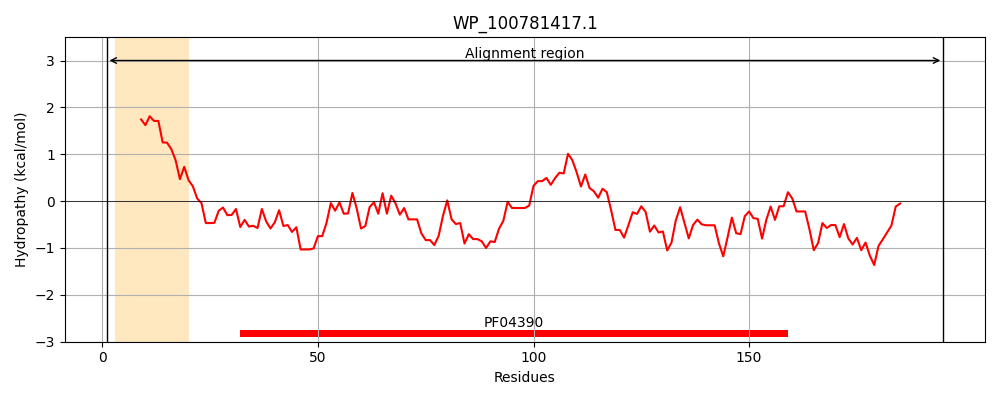
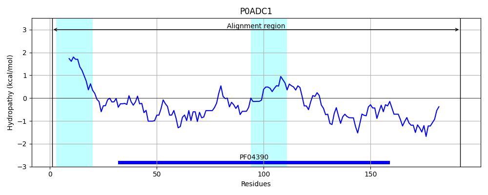
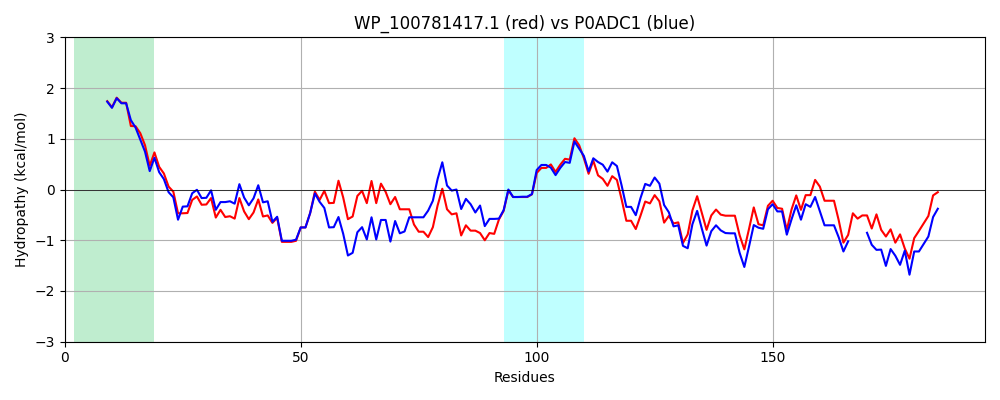

Hit Accession: P0ADC1
Hit TCID: 1.B.42.1.2
Hit Description: gnl|BL_ORD_ID|8747 gnl|TC-DB|P0ADC1|1.B.42.1.2 LPS-assembly lipoprotein LptE OS=Escherichia coli (strain K12) GN=lptE PE=1 SV=1
Mach Len: 195
e:0.000000
Query TMS Count : 1
Hit TMS Count: 2
TMS-Overlap Score: 0.900000
Predicted Substrates:CHEBI:6494;lipopolysaccharide
BLAST Alignment:
Score: 709 , Bit scores: 277 bits, E-value: 2.3e-96, Alignment length: 195, Percentage identity: 71
Query: 1 MRYLVTMLLSLAVLVTAGCGWHLRSTTKVPTTMKTMILQSSDPNGPLSRAVRNQLRLNGVDLIDASTLRKDVPSLRLDGSSIQKDTASVFQDGRTAEYQMVMTVHASVLIPGHDIYPITTKVYRSFFDNPQAALAKDAEQDMIIQEMYDKAAEQLIRKLPSVQVADVEATQQEEKPVAGSTAPTSSGNRVSTTLG 195
MRYL T+LLSLAVL+TAGCGWHLR TT+VP+TMK MIL S DPNGPLSRAVRNQLRLNGV+L+D T RKDVPSLRL SI KDTASVF++G+TAEYQM+MTV+A+VLIPG DIYPI+ KV+RSFFDNPQ ALAKD EQDMI++EMYD+AAEQLIRKLPS++ AD+ + +E+ + +T ++ RVSTTLG
Sbjct: 1 MRYLATLLLSLAVLITAGCGWHLRDTTQVPSTMKVMILDSGDPNGPLSRAVRNQLRLNGVELLDKETTRKDVPSLRLGKVSIAKDTASVFRNGQTAEYQMIMTVNATVLIPGRDIYPISAKVFRSFFDNPQMALAKDNEQDMIVKEMYDRAAEQLIRKLPSIRAADI---RSDEEQTSTTTDTPATPARVSTTLG 192 | Protein Hydropathy Plots: |
|---|
|  |  |
Pairwise Alignment-Hydropathy Plot:
|
|---|
|  |